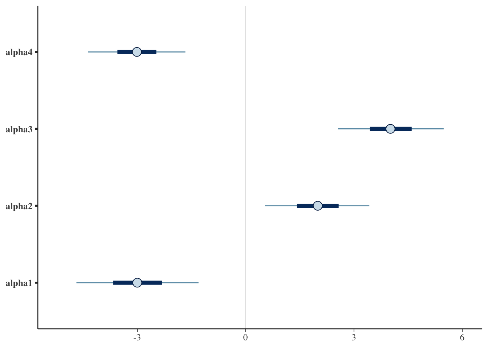

library(cmdstanr)
library(bayesplot)Coagulation
An example of Bayesian ANOVA
It is adapted from Unit 7: anovacoagulation.odc.
Problem Statement
Here 24 animals are randomly allocated to 4 different diets, but the numbers allocated to different diets are not the same. The coagulation time for blood is measured for each animal. Are the diet-based differences significant?
Box, Hunter, Hunter; Statistics for Experimenters, p. 166
Model
mod <- cmdstan_model(anovacoagulation)As you can see, this isn’t the best implementation of this. It currently requires typing each variable multiple times. This could have loops, which would reduce having to type out each variable multiple times.
mod$print()data {
int<lower=0> N1;
int<lower=0> N2;
int<lower=0> N3;
int<lower=0> N4;
vector[N1] y1;
vector[N2] y2;
vector[N3] y3;
vector[N4] y4;
}
parameters {
real mu0;
real<lower=0> tau;
real alpha4;
real alpha3;
real alpha2;
}
transformed parameters {
real alpha1 = -(alpha2 + alpha3 + alpha4);
real mu1 = mu0 + alpha1;
real mu2 = mu0 + alpha2;
real mu3 = mu0 + alpha3;
real mu4 = mu0 + alpha4;
}
model {
mu0 ~ normal(0, 1 / sqrt(0.0001));
tau ~ gamma(0.001, 0.001);
alpha4 ~ normal(0, 1 / sqrt(0.0001));
alpha3 ~ normal(0, 1 / sqrt(0.0001));
alpha2 ~ normal(0, 1 / sqrt(0.0001));
y1 ~ normal(mu1, 1 / sqrt(tau));
y2 ~ normal(mu2, 1 / sqrt(tau));
y3 ~ normal(mu3, 1 / sqrt(tau));
y4 ~ normal(mu4, 1 / sqrt(tau));
}
generated quantities {
real onetwo = alpha1 - alpha2;
real onethree = alpha1 - alpha3;
real onefour = alpha1 - alpha4;
real twothree = alpha2 - alpha3;
real twofour = alpha2 - alpha4;
real threefour = alpha3 - alpha4;
}Sampling
# cut and pasted data from .odc file
times = c(62, 60, 63, 59, 63, 67, 71, 64, 65, 66, 68, 66, 71, 67, 68,
68, 56, 62, 60, 61, 63, 64, 63, 59)
diets = c(1, 1, 1, 1, 2, 2, 2, 2, 2, 2, 3, 3, 3, 3, 3,
3, 4, 4, 4, 4, 4, 4, 4, 4)
y1 <- times[diets == 1]
y2 <- times[diets == 2]
y3 <- times[diets == 3]
y4 <- times[diets == 4]
input_data <- list(
N1 = length(y1),
N2 = length(y2),
N3 = length(y3),
N4 = length(y4),
y1 = y1,
y2 = y2,
y3 = y3,
y4 = y4
)Now that we have the data to pass into our sampling, let’s proceed.
fit <- mod$sample(
data = input_data,
seed = 123,
chains = 4,
parallel_chains = 4,
refresh = 500, # print update every 500 iterations
iter_warmup = 1000,
iter_sampling = 5000
)Results
Since we don’t care about all the values, we are going to select the specific ones we care about.
fit$summary(c("alpha4", "alpha3", "alpha2", "alpha1", "onetwo", "onethree",
"onefour", "twothree", "twofour", "threefour"))# A tibble: 10 × 10
variable mean median sd mad q5 q95 rhat ess_bulk ess_tail
<chr> <num> <num> <num> <num> <num> <num> <num> <num> <num>
1 alpha4 -3.01 -3.01 0.822 0.799 -4.36 -1.67 1.00 19167. 14643.
2 alpha3 4.02 4.01 0.894 0.857 2.56 5.48 1.00 17767. 13792.
3 alpha2 1.99 2.00 0.884 0.856 0.529 3.43 1.00 19997. 14321.
4 alpha1 -3.00 -3.00 1.03 0.998 -4.69 -1.30 1.00 27457. 15674.
5 onetwo -4.99 -5.00 1.61 1.54 -7.67 -2.33 1.00 25684. 15976.
6 onethree -7.02 -7.00 1.62 1.58 -9.66 -4.37 1.00 23064. 15532.
7 onefour 0.0144 0.0129 1.54 1.49 -2.52 2.52 1.00 24007. 16103.
8 twothree -2.03 -2.02 1.43 1.38 -4.41 0.311 1.00 17113. 12301.
9 twofour 5.01 5.01 1.34 1.30 2.80 7.23 1.00 18883. 13018.
10 threefour 7.03 7.03 1.36 1.32 4.81 9.28 1.00 17591. 13736.Plot Intervals
Now that we have the draws from the model, we can use them to plot intervals.
fit$draws(variables = c("alpha4", "alpha3", "alpha2", "alpha1")) |>
mcmc_intervals()
fit$draws(variables = c("mu1", "mu2", "mu3", "mu4", "onetwo", "onethree",
"onefour", "twothree", "twofour", "threefour")) |>
mcmc_intervals()